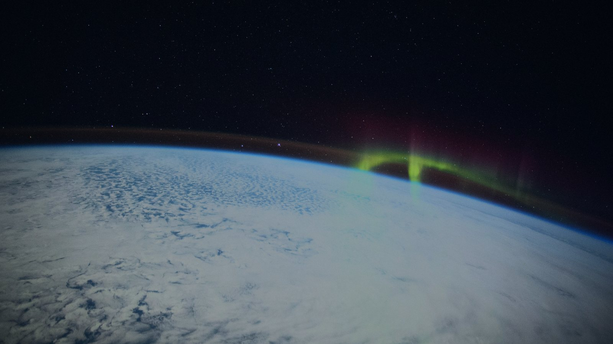
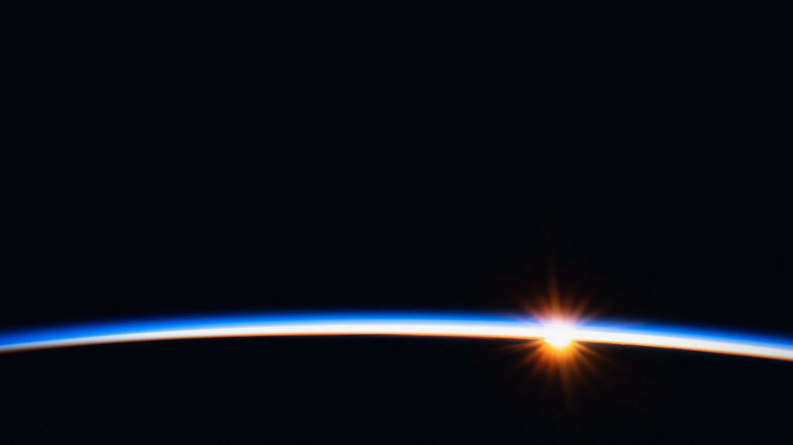
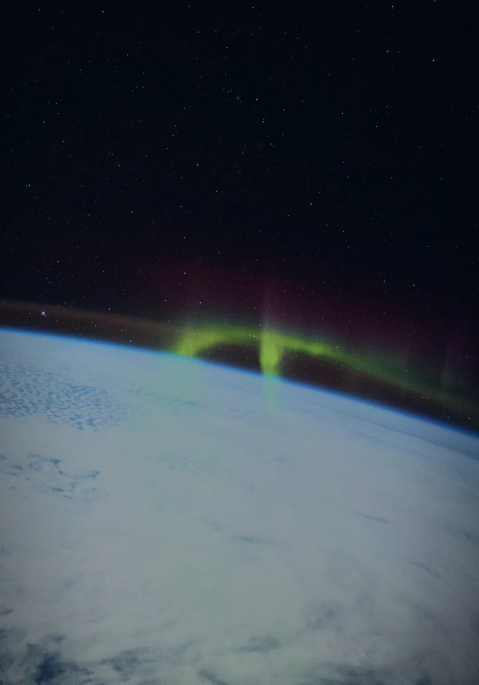
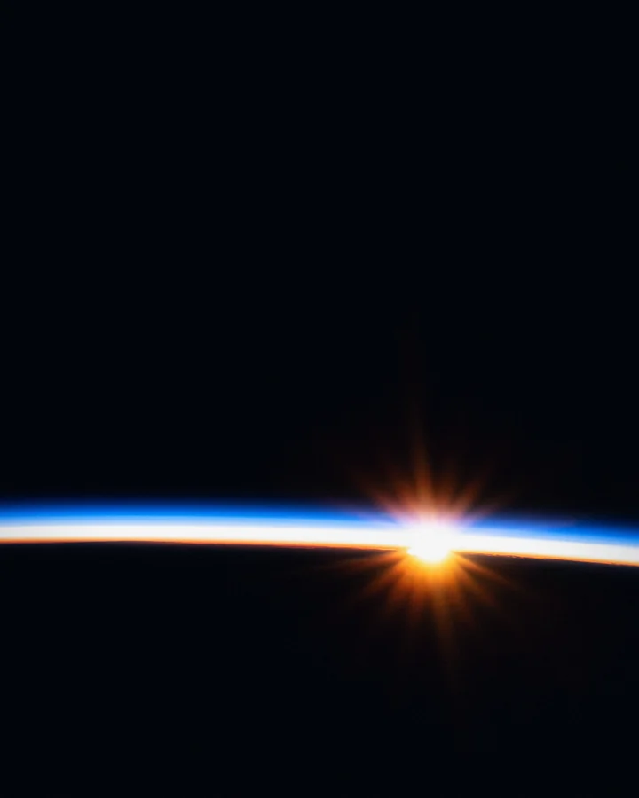
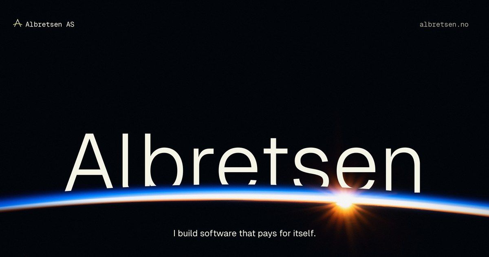
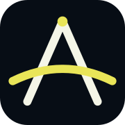

00Direction
Airglow
The view from low orbit, kept honest: real NASA photographs of the Earth's night limb, graded to one disciplined palette. The products are the cast of a quiet character-select screen: four tiles standing on a lattice ring above first light, each owning one atmospheric emission line. Serene and spacious: one idea per screen, a lot of dark sky.
01Hero imagery






02The roster: image-sequence scrub
Scroll to turn the ring.
72 frames (1280×720) and 48 portrait frames (720×1280), baked from the live three.js scene in roster/roster.js. Scroll progress maps to a frame; the ring lingers on each product and glides between them.